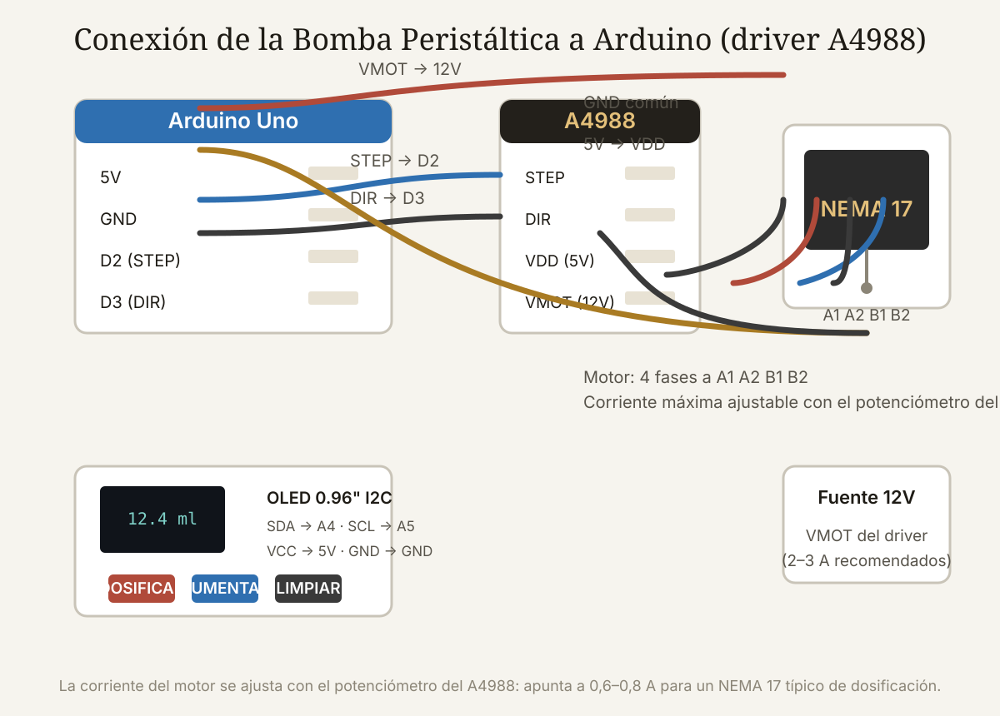

Qué cubre esta guía
- Qué es una bomba peristáltica y por qué dosifica bien
- Componentes del proyecto
- El circuito: motor, driver y Arduino
- Calcular el volumen por revolución
- Código: dosificar mililitros con AccelStepper
- Calibración práctica con agua
- Interfaz: botones y pantalla OLED
- Aplicaciones reales
- Problemas comunes y soluciones
- Conclusión
- Preguntas frecuentes
Qué es una bomba peristáltica y por qué dosifica bien
Una bomba peristáltica impulsa líquidos comprimiendo un tubo flexible con rodillos montados en un rotor. Al girar, los rodillos "pellizcan" el tubo y empujan el contenido hacia adelante; el tramo que se suelta recupera su forma y aspira más líquido. Es el mismo principio del peristaltismo intestinal, y de ahí su nombre.
Sus ventajas frente a una bomba centrífuga convencional la hacen la reina de la dosificación:
- El fluido no toca la mecánica: solo entra en contacto con el tubo, por lo que no contamina el líquido ni se corroe la bomba. Ideal para químicos, alimentos y soluciones de cultivo.
- Volumen desplazado exacto: cada revolución completa del rotor mueve un volumen fijo, determinado por el diámetro del tubo y la geometría del cabezal. El caudal depende solo de la velocidad de giro.
- Autocebado: la bomba se llena sola y puede trabajar "en seco" sin dañarse (dentro de límites), algo imposible para una centrífuga.
- Retorno nulo: el pellizco del tubo actúa como válvula de retención, evitando sifonado cuando la bomba está detenida.
La desventaja es el desgaste del tubo (el componente consumible) y un caudal limitado, pero para dosificar mililitros o litros por hora, es perfecta.
Componentes del proyecto
Esta construcción usa un cabezal de bomba peristáltica con motor NEMA 17, la configuración más común en el mundo maker por su precio y precisión:
| Componente | Especificación recomendada | Función |
|---|---|---|
| Cabezal de bomba | 3 rodillos, tubo de 4–8 mm interior | Mecanismo de compresión del tubo |
| Tubo de silicona | Silicona alimentaria o de platino curado | Único elemento en contacto con el líquido |
| Motor NEMA 17 | Bipolar, 1,8°/paso, 40–45 N·cm | Gira el rotor del cabezal |
| Driver A4988 | 1/16 microstepping | Control de corriente y pulsos |
| Arduino Uno | — | Genera pasos y gestiona la interfaz |
| Fuente 12V / 2–3 A | — | Alimentación del motor |
| OLED 0,96" I2C | SSD1306 | Muestra volumen y estado |
| Botones | 3 pulsadores con resistencias pull-down | Interfaz de dosificación |
Puedes comprar el cabezal con motor integrado (los modelos para impresoras de laboratorio) o imprimir en 3D un cabezal compatible con NEMA 17; hay diseños probados en Printables y Thingiverse con resultados sorprendentemente buenos.
El circuito: motor, driver y Arduino
La electrónica repite el patrón estándar de un motor paso a paso con driver, ya detallado en la guía del brazo robótico impreso en 3D:
- Driver A4988: STEP en el pin 2 del Arduino, DIR en el pin 3, MS1–MS3 a VCC para 1/16 de paso, VDD a 5V, VMOT a 12V.
- Motor: las dos fases (A1/A2, B1/B2) a los cuatro pines del driver, con el orden del fabricante.
- Fuente: 12V a VMOT con un condensador electrolítico de 470–1000 µF cerca del driver, y GND común con el Arduino.
- OLED: SDA a A4, SCL a A5, VCC a 5V.
- Botones: a los pines 6, 7 y 8 con pull-down de 10 kΩ (o pull-up interno).
Calcular el volumen por revolución
El dato maestro del sistema es cuántos mililitros desplaza una revolución del rotor. Dos caminos para obtenerlo:
1. Por geometría (aproximación): cada rodillo comprime un volumen aproximado de π · r² · largo_efectivo, donde r es el radio interno del tubo y el largo efectivo es la porción comprimida. Con 3 rodillos, una revolución desplaza 3 veces ese volumen. Es una estimación útil, pero el radio interno real de los tubos de silicona varía y el ajuste de la carcasa influye.
2. Por medición (la forma correcta): haz girar el motor un número entero de revoluciones con el tubo aspirando agua destilada y mide el volumen recogido en una probeta graduada:
volumen_por_revolucion = volumen_recogido_ml / revoluciones
// Ejemplo: 10 revoluciones desplazaron 28,4 ml
volumen_por_rev = 28,4 / 10 = 2,84 ml/rev
// Con el microstepping y el motor de 200 pasos/rev:
pasos_por_revolucion = 200 * 16 = 3.200 pasos
ml_por_paso = 2,84 / 3.200 = 0,0008875 ml/pasoCon ese factor calibrado, dosificar 50 ml son 50 / 0,0008875 ≈ 56.338 pasos. La precisión final dependerá de que el tubo esté bien asentado, del diámetro exacto y de que la velocidad no sea tan alta que los rodillos resbalen.
Código: dosificar mililitros con AccelStepper
Usamos AccelStepper por la misma razón que en el brazo robótico: aceleración controlada que evita perder pasos. El programa principal dosifica un volumen objetivo en mililitros usando el factor calibrado:
#include <AccelStepper.h>
#include <Wire.h>
#include <Adafruit_SSD1306.h>
#define STEP_PIN 2
#define DIR_PIN 3
// Factor calibrado: ml por paso (ajustar tras la calibración)
float mlPorPaso = 0.0008875;
// Motor en modo DRIVER
AccelStepper motor(AccelStepper::DRIVER, STEP_PIN, DIR_PIN);
float volumenObjetivo = 0; // ml a dosificar
float dosificado = 0; // ml ya entregados
void setup() {
motor.setMaxSpeed(1200); // pasos/s
motor.setAcceleration(800); // pasos/s²
motor.setSpeed(0);
}
void dosificar(float ml) {
long pasos = (long)(ml / mlPorPaso);
motor.move(pasos); // posición relativa
while (motor.distanceToGo() != 0) {
motor.run();
}
dosificado += ml;
}
void loop() {
// Ejemplo: dosificar 25 ml al recibir orden (sustituir por botones)
if (ordenRecibida) {
dosificar(25.0);
ordenRecibida = false;
}
}motor.move() con un valor negativo invierte el sentido: útil para llenar y vaciar (primavera del tubo o limpieza). El sentido de giro del cabezal determina si bombea o aspira; verifícalo con agua antes de fijar los tubos.Calibración práctica con agua
La calibración es el paso que separa una bomba "que mueve agua" de una dosificadora de precisión. El procedimiento, con agua destilada a temperatura ambiente:
- Instala el tubo de silicona nuevo, bien asentado en el cabezal, y purga el aire: haz girar el rotor hasta que el agua fluya sin burbujas.
- Coloca una probeta graduada de precisión en la salida y una pesa/tara en la entrada con agua.
- Ordena exactamente 10 revoluciones (con el código de prueba) y anota los ml recogidos. Repite 3 veces.
- Promedia y calcula
ml/paso. Introduce el valor en el sketch. - Verificación: dosifica 10 ml, 25 ml y 50 ml y mide el error. Un sistema bien calibrado entrega errores menores al 1–2 %.
Interfaz: botones y pantalla OLED
Con tres botones y la pantalla OLED el equipo se vuelve autónomo, sin computador:
- Botón 1 (DOSIFICAR): ejecuta la dosificación del volumen seleccionado.
- Botón 2 (AUMENTAR): sube el volumen objetivo en pasos de 5 ml (con pulsación larga: 50 ml).
- Botón 3 (LIMPIAR): invierte el giro 10 segundos para purgar o limpiar el tubo.
La pantalla muestra el volumen objetivo, el progreso en ml y el estado (LISTO / DOSIFICANDO / LIMPIEZA). El código integra la librería Adafruit_SSD1306 y lectura de botones con debounce; el volumen objetivo se conserva en la EEPROM si quieres que persista al reiniciar.
Para proyectos más ambiciosos, el mismo Arduino puede recibir órdenes por MQTT o serial (dosis exacta en gramos/ml), integrarse a un sistema de riego con sensor de humedad o registrar cada dosificación con fecha y hora.
Aplicaciones reales
| Aplicación | Qué dosifica | Rango típico | Nota |
|---|---|---|---|
| Hidroponía | Soluciones nutritivas A/B | 1–10 ml por dosis | Precisión diaria; tubo resistente a pH |
| Acuario | Aditivos, CO2 líquido | 0,5–5 ml/día | Dosificación automática horaria |
| Laboratorio | Reactivos, medios de cultivo | 0,1–50 ml | Tubo de platino curado |
| Química doméstica | Lejía, ácidos diluidos | 10–100 ml | Verificar compatibilidad del tubo |
| Café / cerveza | Agua y aditivos | 50–500 ml | Tubo alimentario |
En todos los casos la ventaja es la misma: dosis repetibles, programables y documentables, sin contacto humano con el líquido y sin depender de medir a ojo.
Problemas comunes y soluciones
| Síntoma | Causa más probable | Solución |
|---|---|---|
| No sale líquido aunque el motor gira | Tubo mal asentado, rodillos flojos o sentido invertido | Reasienta el tubo; verifica el sentido con una prueba de agua |
| El volumen entregado varía dosis a dosis | Burbujas de aire o tubo desgastado | Purgar; reemplazar el tubo y recalibrar |
| El motor pierde pasos al dosificar rápido | Aceleración o velocidad máximas demasiado altas | Baja setMaxSpeed/setAcceleration; revisa Vref |
| El driver se apaga solo | Sobrecorriente o sobrecalentamiento | Baja Vref, pon disipador, revisa la fuente |
| El líquido sifona hacia atrás al detenerse | Rodillos mal ajustados (no sellan el tubo) | Ajusta la separación rodillos-carcasa |
| Lecturas de pantalla corruptas | Cables I2C largos o ruido del motor | Acorta cables, añade ferrita o separa el cableado |
Conclusión
La bomba peristáltica controlada por Arduino es uno de los proyectos más útiles de la electrónica aplicada: resuelve un problema real (dosificar líquidos con precisión y sin contaminación) con componentes baratos y un código que cabe en una página. La combinación cabezal + NEMA 17 + driver + Arduino + calibración con agua produce un instrumento de laboratorio casero que compite con equipos comerciales de cientos de dólares.
La clave del éxito, como en todo proyecto de precisión, está en la calibración y en el respeto al único componente consumible: el tubo de silicona. Cuídalo, recalibra al cambiarlo y tu dosificadora será exacta durante años.
Preguntas frecuentes
¿Qué precisión tiene una bomba peristáltica con Arduino?
Con un motor paso a paso bien calibrado y un tubo de silicona nuevo y bien asentado, se logran errores del 1–2 % en dosis de 10–100 ml, y del 3–5 % en dosis muy pequeñas (1–5 ml). La precisión depende más de la calidad de la calibración y del tubo que del motor: un NEMA 17 con microstepping 1/16 da un control de posición tan fino que el error dominante es el volumen desplazado por los rodillos, que varía levemente con la temperatura y el desgaste del tubo.
¿Qué tubo debo usar y cada cuánto cambiarlo?
El tubo debe ser de silicona (mejor, silicona de platino curado o silicona alimentaria) del diámetro que especifique tu cabezal. La silicona es compatible con agua, la mayoría de soluciones nutritivas, ácidos diluidos y alimentos; para solventes orgánicos agresivos se necesitan tubos especiales (Viton, Tygon). La vida útil del tubo depende de las horas de giro: en uso continuo puede durar semanas; en dosificación diaria intermitente, meses. Cambia el tubo cuando veas grietas, opacidad o cuando la dosis empiece a variar.
¿Puedo usar un motor DC o un servo en lugar del paso a paso?
Puedes, pero perderás precisión y repetibilidad. Un motor DC con encoder puede cerrar un lazo de control, pero el sistema se complica y el encoder añade coste. Un servo estándar solo gira ~180°, insuficiente para un rotor de bomba (que gira de forma continua); necesitarías un servo de rotación continua, que no tiene control de posición. El paso a paso bipolar con driver es la opción correcta: control de posición exacta, par alto a baja velocidad y sin encoder.
¿Cómo evito que el líquido fluya cuando la bomba está apagada?
El propio mecanismo peristáltico lo evita: el rodillo que queda comprimiendo el tubo actúa como válvula de retención, siempre que el apriete del cabezal sea el correcto. Si notas sifonado al apagar, revisa el ajuste de la separación entre rodillos y carcasa (debe comprimir el tubo hasta sellarlo sin aplastarlo de forma permanente). Como precaución adicional en montajes donde la entrada queda por encima de la salida, usa un tubo de salida que suba ligeramente antes de bajar.
¿Cuánto cuesta montar una dosificadora de laboratorio casera?
Con cabezal impreso en 3D: motor NEMA 17 (10–15 USD) + driver A4988 (2–5 USD) + Arduino Uno (8–15 USD) + fuente 12V (10–15 USD) + tubo de silicona (5–10 USD) + OLED y botones (5–10 USD), el total ronda los 40–70 USD. Con un cabezal comercial de precisión para laboratorio, el cabezal suma 30–80 USD. Comparado con una bomba peristáltica de laboratorio comercial (200–800 USD), es una fracción del costo con la misma electrónica de control.
Este artículo es contenido editorial independiente: no contiene ubicaciones patrocinadas ni enlaces de afiliado. Si en futuras actualizaciones se agregan enlaces a proveedores de componentes, serán identificados explícitamente. El código y las conexiones son referenciales y deben adaptarse y probarse con tu propio hardware. Si detectas un error en esta guía, por favor avísanos.
Sigue aprendiendo
Combina la dosificadora con el sistema de riego automático con sensor de humedad para un huerto totalmente autónomo, o explora más sensores en la Guía Esencial de Sensores.
Fuentes primarias y lecturas recomendadas
Referencias sobre bombas peristálticas, control de motores paso a paso y dosificación. El factor ml/paso debe calibrarse con el tubo y cabezal reales.
- AccelStepper — Documentación oficial de la librería
- Pololu — Guía del driver A4988
- Wikipedia — Bomba peristáltica (principio y aplicaciones)
- Adafruit — Pantalla OLED SSD1306 y documentación
- Cole-Parmer — Guía de tubos para bombas peristálticas
- Arduino Reference — Librería AccelStepper
Enlaces revisados: 15 de agosto de 2026.